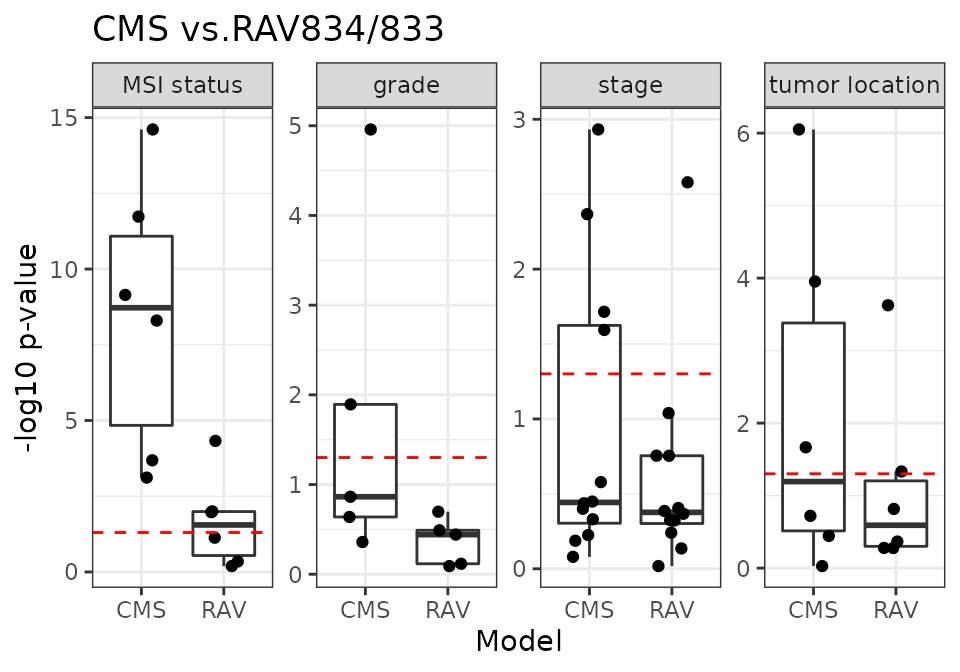
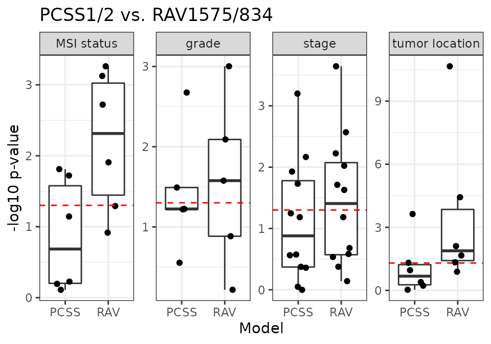

Explain CRC clinical variables using RAVs
Sehyun Oh
2022-03-16
Source:vignettes/CRC/CRC_ClinicalVar.Rmd
CRC_ClinicalVar.RmdAbstract
Source CodeSetup
Background
Using training and validation data of the original CRC study, we compared associations between different subtype models and RAVs with the same clinicopathological variables. Notably, these data were not part of RAV training and are microarray datasets whereas the RAVs were trained exclusively from RNA-seq data.
As described previously in CRC study, we used the likelihood-ratio test (LRT) to compare the different subtype models for association with clinicopathological variables. A p-value near 1 (-log10p-value near 0) means that no additional information is provided by a full model composed of two subtype definitions compared to a model with only one.
CMS-associated RAVs performed better than discrete CMS on all four phenotypes (plot) and also outperformed PCSSs except on tumor location (plot). Interestingly, PCSS-associated RAVs were still better than CMS but slightly worse than PCSSs (plot), while CMS-associated RAVs were better than both CMS and PCSSs (plot), indicating that RAVs contain more comprehensive information. This performance improvement became more significant using only the 10 original validation datasets, excluding 8 datasets used to train the PCSS model. In conclusion, RAVs trained from heterogeneous datasets, not specific to CRC, captured biologically-relevant signatures for CRC as well or superior to focused efforts using CRC-specific databases, suggesting that RAVs are for general-use and can be applied to describe other diseases as well.
Select training dataset
CRC paper actually used both training and validation datasets (total of 18) for Figure 4. If you want to use all 18 datasets, assign the variable num_dat = 18. If you want only 10 CRC datasets excluding 8 datasets used to build PCSSs, assign num_dat = 10.
Required inputs
- 3 environmental variables for
Fig4C_CMSvs.R:-
m2_name(column name for the model to be compared to CMS)
-
m2_1andm2_2(names of the two model variables that form the group to be compared to CMS)
-
num_datfor the number of CRC datasets for testing (18 or 10)
-
- 6 environmental variables for
Fig4C_contScores.R:-
m1_name,m1_1,m1_2for one model
-
m2_name,m2_1,m2_2for the other -
num_datfor the number of CRC datasets for testing (18 or 10)
-
CMS vs. PCSS1/2
First, we reproduce the previous result comparing the performance of PCSSs (continuous score) against CMS (discrete score).
18 CRC validation datasets
m2_name <- "PCSS"
m2_1 <- "PCSS1"
m2_2 <- "PCSS2"
num_dat <- 18
x <- source("R/Fig4C_CMSvs.R", print.eval = TRUE)
## Warning: Removed 86 rows containing non-finite values (stat_boxplot).
## Warning: Removed 86 rows containing missing values (geom_point).
10 CRC validation datasets
m2_name <- "PCSS"
m2_1 <- "PCSS1"
m2_2 <- "PCSS2"
num_dat <- 10
x <- source("R/Fig4C_CMSvs.R", print.eval = TRUE)
## Warning: Removed 46 rows containing non-finite values (stat_boxplot).
## Warning: Removed 46 rows containing missing values (geom_point).Figures in the paper
Here is the summary of boxplots in our paper.
| Figures | Models | # validation data |
|---|---|---|
| Fig.3B | CMS vs. RAV834/833 | 18 |
| Fig.3C | PCSS1/2 vs. RAV834/833 | 18 |
| Sup.Fig.5B | CMS vs. RAV1575/834 | 18 |
| Sup.Fig.5C | PCSS1/2 vs. RAV1575/834 | 18 |
| Sup.Fig.5E | CMS vs. RAV832/188 | 18 |
| Sup.Fig.5F | PCSS1/2 vs. RAV832/188 | 18 |
| Fig.6C | CMS vs. PCSS1/2 | 10 |
| Fig.6D | CMS vs. RAV834/833 | 10 |
| Fig.6E | PCSS1/2 vs. RAV834/833 | 10 |
Compare to CMS
CMS vs. RAV1575/834
RAV1575/834 are the most similar RAVs to PCSS1/2, respectively, based on Pearson correlation.
m2_name <- "RAV"
m2_1 <- "RAV1575"
m2_2 <- "RAV834"
num_dat <- 18
x <- source("R/Fig4C_CMSvs.R", print.eval = TRUE)
## Warning: Removed 86 rows containing non-finite values (stat_boxplot).
## Warning: Removed 86 rows containing missing values (geom_point).CMS vs. RAV834/833
RAV834/833 have the highest r-squared score when we compared the sample scores against the metadata.
18 CRC validation datasets
m2_name <- "RAV"
m2_1 <- "RAV834"
m2_2 <- "RAV833"
num_dat <- 18
x <- source("R/Fig4C_CMSvs.R", print.eval = TRUE)
## Warning: Removed 86 rows containing non-finite values (stat_boxplot).
## Warning: Removed 86 rows containing missing values (geom_point).
10 CRC validation datasets
m2_name <- "RAV"
m2_1 <- "RAV834"
m2_2 <- "RAV833"
num_dat <- 10
x <- source("R/Fig4C_CMSvs.R", print.eval = TRUE)
## Warning: Removed 46 rows containing non-finite values (stat_boxplot).
## Warning: Removed 46 rows containing missing values (geom_point).CMS vs. RAV832/188
RAV832/188 are the most frequently validated RAVs for 18 CRC datasets.
m2_name <- "RAV"
m2_1 <- "RAV832"
m2_2 <- "RAV188"
num_dat <- 18
x <- source("R/Fig4C_CMSvs.R", print.eval = TRUE)
## Warning: Removed 86 rows containing non-finite values (stat_boxplot).
## Warning: Removed 86 rows containing missing values (geom_point).Compare to PCSS
PCSS vs. RAV1575/834
RAV1575/834 are the most similar RAVs to PCSS1/2, respectively, based on Pearson correlation.
m1_name <- "PCSS"
m1_1 <- "PCSS1"
m1_2 <- "PCSS2"
m2_name <- "RAV"
m2_1 <- "RAV1575"
m2_2 <- "RAV834"
num_dat <- 18
x <- source("R/Fig4C_contScores.R", print.eval = TRUE)
## Warning: Removed 86 rows containing non-finite values (stat_boxplot).
## Warning: Removed 86 rows containing missing values (geom_point).
PCSS vs. RAV834/833
RAV834/833 have the highest r-squared score when we compared the sample scores against the metadata.
18 CRC validation datasets
m1_name <- "PCSS"
m1_1 <- "PCSS1"
m1_2 <- "PCSS2"
m2_name <- "RAV"
m2_1 <- "RAV834"
m2_2 <- "RAV833"
num_dat <- 18
x <- source("R/Fig4C_contScores.R", print.eval = TRUE)
## Warning: Removed 82 rows containing non-finite values (stat_boxplot).
## Warning: Removed 82 rows containing missing values (geom_point).10 CRC validation datasets
m1_name <- "PCSS"
m1_1 <- "PCSS1"
m1_2 <- "PCSS2"
m2_name <- "RAV"
m2_1 <- "RAV834"
m2_2 <- "RAV833"
num_dat <- 10
x <- source("R/Fig4C_contScores.R", print.eval = TRUE)
## Warning: Removed 44 rows containing non-finite values (stat_boxplot).
## Warning: Removed 44 rows containing missing values (geom_point).PCSS vs. RAV832/188
RAV832/188 are the most frequently validated RAVs for 18 CRC datasets.
m1_name <- "PCSS"
m1_1 <- "PCSS1"
m1_2 <- "PCSS2"
m2_name <- "RAV"
m2_1 <- "RAV832"
m2_2 <- "RAV188"
num_dat <- 18
x <- source("R/Fig4C_contScores.R", print.eval = TRUE)
## Warning: Removed 84 rows containing non-finite values (stat_boxplot).
## Warning: Removed 84 rows containing missing values (geom_point).PCSS vs. RAV834/3290
RAV3290 is associated with “stage” metadata of CRC datasets.
m1_name <- "PCSS"
m1_1 <- "PCSS1"
m1_2 <- "PCSS2"
m2_name <- "RAV"
m2_1 <- "RAV834"
m2_2 <- "RAV3290"
num_dat <- 10
x <- source("R/Fig4C_contScores.R", print.eval = TRUE)
## Warning: Removed 46 rows containing non-finite values (stat_boxplot).
## Warning: Removed 46 rows containing missing values (geom_point).
PCSS vs. RAV834/596
RAV596 is associated with “grade” metadata of CRC datasets.
m1_name <- "PCSS"
m1_1 <- "PCSS1"
m1_2 <- "PCSS2"
m2_name <- "RAV"
m2_1 <- "RAV834"
m2_2 <- "RAV596"
num_dat <- 10
x <- source("R/Fig4C_contScores.R", print.eval = TRUE)
## Warning: Removed 44 rows containing non-finite values (stat_boxplot).
## Warning: Removed 44 rows containing missing values (geom_point).
Session Info
sessionInfo()
## R version 4.1.2 (2021-11-01)
## Platform: x86_64-pc-linux-gnu (64-bit)
## Running under: Ubuntu 20.04.3 LTS
##
## Matrix products: default
## BLAS/LAPACK: /usr/lib/x86_64-linux-gnu/openblas-pthread/libopenblasp-r0.3.8.so
##
## locale:
## [1] LC_CTYPE=en_US.UTF-8 LC_NUMERIC=C
## [3] LC_TIME=en_US.UTF-8 LC_COLLATE=en_US.UTF-8
## [5] LC_MONETARY=en_US.UTF-8 LC_MESSAGES=en_US.UTF-8
## [7] LC_PAPER=en_US.UTF-8 LC_NAME=C
## [9] LC_ADDRESS=C LC_TELEPHONE=C
## [11] LC_MEASUREMENT=en_US.UTF-8 LC_IDENTIFICATION=C
##
## attached base packages:
## [1] stats graphics grDevices utils datasets methods base
##
## other attached packages:
## [1] logistf_1.24.1 metafor_3.0-2 Matrix_1.4-0
## [4] survival_3.2-13 forcats_0.5.1 stringr_1.4.0
## [7] dplyr_1.0.8 purrr_0.3.4 readr_2.1.2
## [10] tidyr_1.2.0 tibble_3.1.6 ggplot2_3.3.5
## [13] tidyverse_1.3.1 Biobase_2.54.0 BiocGenerics_0.40.0
## [16] BiocStyle_2.22.0
##
## loaded via a namespace (and not attached):
## [1] nlme_3.1-155 fs_1.5.2 lubridate_1.8.0
## [4] httr_1.4.2 rprojroot_2.0.2 tools_4.1.2
## [7] backports_1.4.1 bslib_0.3.1 utf8_1.2.2
## [10] R6_2.5.1 DBI_1.1.2 mgcv_1.8-38
## [13] colorspace_2.0-3 withr_2.5.0 tidyselect_1.1.2
## [16] compiler_4.1.2 textshaping_0.3.6 cli_3.2.0
## [19] rvest_1.0.2 mice_3.14.0 xml2_1.3.3
## [22] desc_1.4.1 labeling_0.4.2 bookdown_0.25
## [25] sass_0.4.0 scales_1.1.1 pkgdown_2.0.2
## [28] systemfonts_1.0.4 digest_0.6.29 rmarkdown_2.13
## [31] pkgconfig_2.0.3 htmltools_0.5.2 highr_0.9
## [34] dbplyr_2.1.1 fastmap_1.1.0 rlang_1.0.2
## [37] readxl_1.3.1 rstudioapi_0.13 jquerylib_0.1.4
## [40] generics_0.1.2 farver_2.1.0 jsonlite_1.8.0
## [43] magrittr_2.0.2 Rcpp_1.0.8.2 munsell_0.5.0
## [46] fansi_1.0.2 lifecycle_1.0.1 stringi_1.7.6
## [49] yaml_2.3.5 mathjaxr_1.6-0 grid_4.1.2
## [52] formula.tools_1.7.1 crayon_1.5.0 lattice_0.20-45
## [55] haven_2.4.3 splines_4.1.2 hms_1.1.1
## [58] knitr_1.37 pillar_1.7.0 reprex_2.0.1
## [61] glue_1.6.2 evaluate_0.15 BiocManager_1.30.16
## [64] modelr_0.1.8 operator.tools_1.6.3 vctrs_0.3.8
## [67] tzdb_0.2.0 cellranger_1.1.0 gtable_0.3.0
## [70] assertthat_0.2.1 cachem_1.0.6 xfun_0.30
## [73] broom_0.7.12 ragg_1.2.2 memoise_2.0.1
## [76] ellipsis_0.3.2